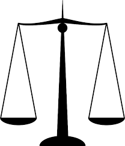

<div id="jsn-maincontent" class="span9 order1 row-fluid">
  <div id="jsn-maincontent_inner">
    <div id="jsn-centercol">
      <div id="jsn-centercol_inner">
        <div id="jsn-mainbody-content" class="jsn-hasmainbody">
          <div id="jsn-mainbody-content-inner1">
            <div id="jsn-mainbody-content-inner2">
              <div id="jsn-mainbody-content-inner3">
                <div id="jsn-mainbody-content-inner4" class="row-fluid">
                  <div id="jsn-mainbody-content-inner" class="span12 order1">
                    <div id="jsn-mainbody">
                      <div id="system-message-container"></div>

                      <div
                        class="item-page"
                        itemscope
                        itemtype="https://schema.org/Article"
                      >
                        <meta itemprop="inLanguage" content="en-GB" />

                        <div itemprop="articleBody">
                          <p></p>
                          <h1 style="text-align: center">
                            Ownership, copyright and the law
                          </h1>
                          <p>
                            <strong>Introduction</strong><br />When a person or
                            an organisation develops and promotes a book, an
                            album of songs, a film or a new software
                            application, for example, it costs them a lot of
                            time, effort and money. This can run into millions
                            of pounds. It is only right therefore that they have
                            legal protection for their 'intellectual property',
                            to stop people stealing it. The legal protection
                            that somebody has for their work is called
                            'copyright.&nbsp;
                          </p>

                          <p>
                            <span style="line-height: 16.3636360168457px"
                              >Although it may not seem like theft, when someone
                              at home illegally downloads some music or a film
                              or a piece of software to use that is copyrighted,
                              it most certainly is. It is denying the people who
                              invested their time, effort and money in the
                              project of a means to regain some of their
                              investment, and to make a profit so that they can
                              continue to operate. To help protect the owners of
                              intellectual property, the Copyright and Patents
                              Act 1988 was introduced.</span
                            >
                          </p>
                          <p>
                            <strong
                              >The Copyright and Patents Act 1988</strong
                            ><br />People who write, paint, compose music,
                            design web pages or invent something, for example,
                            have 'intellectual rights' over what they have done.
                            They own the copyright. This means that somebody who
                            wants to use what they have done must get permission
                            first from the copyright owner. The copyright holder
                            can refuse to give permission, give permission
                            freely, give permission but attach some conditions
                            of use or could charge for permission. These rights
                            are enshrined in law in The Copyright and Patents
                            Act 1988. For example, If you find a web site you
                            like, you cannot make copies of the web site. You
                            cannot burn copies of the web site on to CD without
                            permission nor can you use images you found there
                            without permission. Many web sites, photographs and
                            images now incorporate software that 'stamps' the
                            images with the copyright owner's details.
                          </p>
                          <p>
                            <strong>Copyright law and the European Union</strong
                            ><br />A problem with the Copyright and Patents Act
                            1998 is that it can only be applied if you are
                            caught breaking copyright laws in the UK. This is
                            clearly a problem, given that the Internet is world
                            wide. Many (but all) countries outside the UK have
                            similar legislation to the&nbsp;<span
                              style="line-height: 16.3636360168457px"
                              >Copyright and Patents Act 1998 but the EU, in an
                              attempt to ensure that all its members' laws on
                              copyright were more or less the same, introduced a
                              number of copyright directives. A directive is an
                              instruction to a member state that it must ensure
                              its own legislation meets the standards laid down
                              in the directives. This helps a little bit, but
                              how effective it is is anyone's guess!</span
                            >
                          </p>
                          <p>
                            <strong>Plagiarism</strong><br />If you do a
                            computing project as part of your course, you cannot
                            include work in your project that somebody else has
                            done without properly giving credit to the author.
                            If you do use somebody else's work without giving it
                            due credit then this is known as 'plagiarism' and
                            even then, you are restricted in how much of someone
                            else's work you can copy wholesale. It is both
                            unethical and a breach of copyright to plagiarise
                            someone's work. There are many web sites offering
                            projects for sale for both school work and
                            university work and many places you can download
                            past pieces of work, although there is no way you
                            can guarantee their quality. Educational
                            institutions and exam boards have become very wise
                            to these sites and now regularly run software
                            through submitted coursework to look for passages
                            that have been stolen.&nbsp;
                          </p>
                          <p></p>
                        </div>
                      </div>
                    </div>
                  </div>
                </div>
              </div>
            </div>
          </div>
        </div>
      </div>
    </div>
  </div>
</div>
